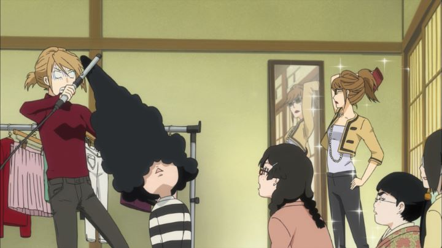

I don't typically watch "josei" anime or manga (the genre is meant for material targeted at young adult women, and I'm a man). But I also like to watch a bit of everything; it's important to broaden your horizons after all. "Princess Jellyfish" is a pretty excellent one to watch too, fun for most anyone to get into, while featuring characters that break stereotypes of girls (and drag-queens, for that matter).Set in a small modern neighborhood in Tokyo, there's an old communal house where six young women live (with the self-given nickname "The Sisterhood"). The thing is, ALL of them are socially-awkward otaku, with interests in trains, dolls, Asian-historical-war-figures, etc. They don't have any interest in fashion, makeup, dancing or clubing. In fact, the girls are horrified of society in general, especially the "Stylish" (hilariously referred in the English dub as if they were an enemy monster species). Tsukimi is one of the girls, trying to make a living as an illustrator, with a particular fondness for jellyfish, inspired by visits to the aquarium with her mother. After arriving in Tokyo, she's discouraged around the young and fashionable, dashing what she had always been told as a child about growing up to be a beautiful princess: in her old shoes and sweat pants, her frumpy exterior doesn't fit in with cultural expectations at all.But then she meets her: a beautiful and outspoken woman, wearing the most beautiful clothes. Initially difficult to talk to, her attempts to be Tsukimi's friend open her up a bit. Fairly soon, however, she learns that her fantastic hair is a wig, that her chest is a stuffed bra... Kuranosuke's a boy!?! Not only that, but also the rich illegitimate son of a local family in politics, who generally don't approve of his "hobby," but otherwise let him do as he pleases to avoid attracting public controversy. The rest of the girls are already freaking out to have a fashionable woman hanging out at their house, so how would they react to knowing he's also a boy, after a long ban against the opposite sex? So Tsukimi tries to keep the secret secret, while playing along with Kuranosuke's attempts to open everyone up, introducing them to fashion, cafes, and nightlife, showing that the world isn't such a scary place.It's a somewhat typical story of unpopular characters learning how to be part of the crowd, but not often enough does it get presented like this. Kuranosuke isn't the "gay-best-friend" you might think he is; he claims not to be a "drag-queen" either, that he's "just a normal guy" outside of his frequent dress-up hobby. Featuring a-typical depictions of women, "Princess Jellyfish" is an inclusive show (although no instances of alternate sexuality seems to be present). The show is generally heartwarming and pleasent, and with lots of slapstick humor, it's funny too!To help provide content to the 11-episode series, there IS a story. "The Sisterhood" house is at risk of being sold for renewed development in the neighborhood, which could mean the end of the group's little sanctuary. The show slowly reveals more about the mothers of both Kuranosuke and Tsukimi. And there's a bit of intrigue regarding Kuranosuke's family and their roles in local politics. And romance! Yep, there's a lot of elements for drama to spice up things and give urgency, although within this anime, most of it gets nothing like a conclusion, making it clear the fish-out-of-water comedy was the main point. Some of those extra plot threads hurt more than they help, sadly... However refreshing and forward-thinking the premise and characters are, the story stumbles into some awkward or difficult territory. One issue is Kuranosuke slowly falling in love with Tsukimi as tthey continue to hang out. Despite the cross-dressing niche, it's reasonable that Kurnosuke is straight and can fall in love with women (while remaining respectful of them), and it makes him a more dimensional character with opportunity for drama. But it potentially ruins an otherwise beautiful friendship between the two, the core of the story. Nothing comes of it by the final episode, but it felt like a serious oversight against the tone the show otherwise accomplished. Beyond that is a plot thread regarding Kurnosuke's square older brother and a female co-worker (Shoko) who takes advantage of his political position, drugging him, posing a one-night stand, and blackmailing him with the pictures, revealing it to be a tactic she regularly uses with dozens of other men. In a show that otherwise had no place for hate, Shoko stands in as the one antagonist, and a nasty b***h at that. Again, it spices up the show with extra drama, and doesn't really reach a conclusion in the matter, but it would have been better off without that story element entirely. It's a shame the series didn't have a satisfying ending to those elements, with a last-minute solution to the Sisterhood house being the only thing solved. Of course, the 2010 anime was based on a manga that at the time had only finished about 1/3 of its story (it finished in 2017). The anime clearly wasn't popular enough to warrant a second season, but the story itself inspired a live-action film and series (the series releasing in 2018), proving the merit of the characters, and possibly providing a more complete story to devoted fans.The series was animated by Brain's Base, at the time a popular alternate studio for their work on shows like "Baccano!" and "Durarara!!", among others. Animation is fairly simple and workmanlike, at the lower-end of what 2010 anime looked like, only expressing energy with the girls from the Sisterhood when they overreact to everything. Their visual designs are distinct, be they short, fat, or tall and skinny... none of the six girls look anything like your typical anime girl. They aren't cute or pretty, but they aren't supposed to be, and it was nice to see girls that didn't look like sex-symbols. The audio for "Princess Jellyfish" is subdued, but distinct, featuring oboe during everyday humdrum moments at the Sisterhood house, and sweet piano melodies when daydreaming of jellyfish drifting in the ocean. There's an odd choice to use a metronome or ticking-sound during moments of tension or anxiety; however appropriate it might have been, I kept thinking there was a rogue clock in my room as I watched. Despite that, I appreciated the soundtrack for doing exactly what it should, distinguishing and complementing it without distracting the viewer too much in its favor. The English dub was cute, fitting for the characters and the content.Funimation's DVD release (the original Blu-ray was quickly discontinued, presumably due to lack of sales) includes multiple additional shorts, also with an English dub. They probably had high hopes for the show that didn't come through in sales. It's a shame, since despite it's flaws, "Princess Jellyfish" represents a lot of the more open-mindedness the 2010's came to be known for, and is pleasently entertaining. It deserves a little more attention and respect.
- "Ani" More reviews can be found at : https://2danicritic.github.io/ Previous review: review_Porco_Rosso Next review: review_Princess_Mononoke